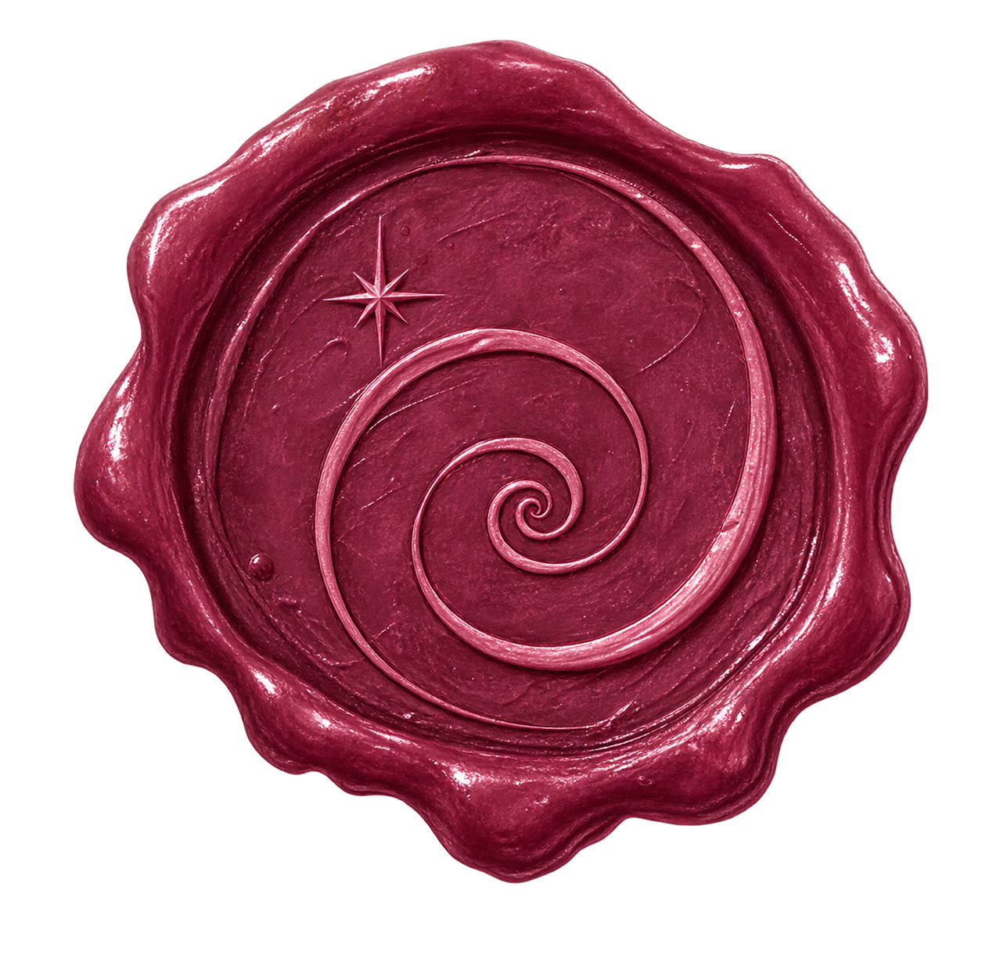
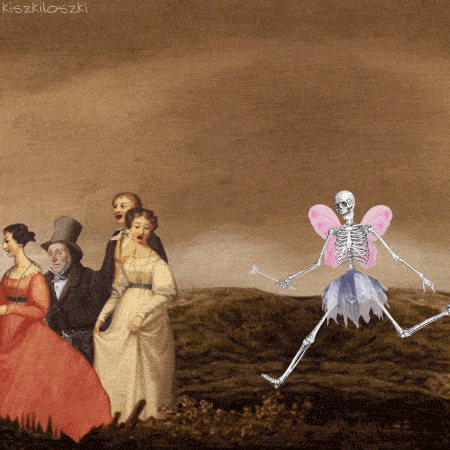
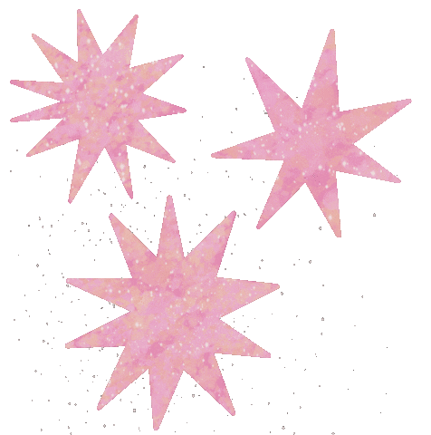
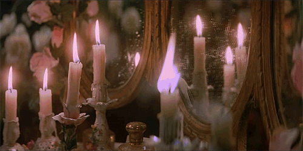
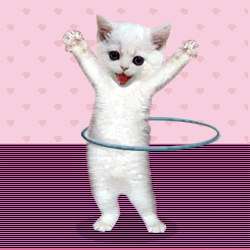
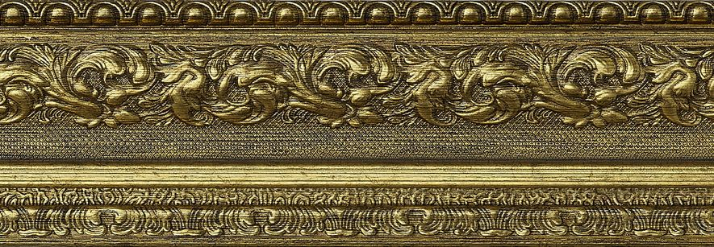
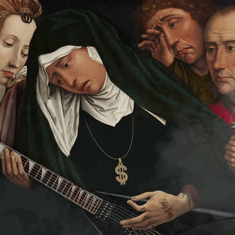
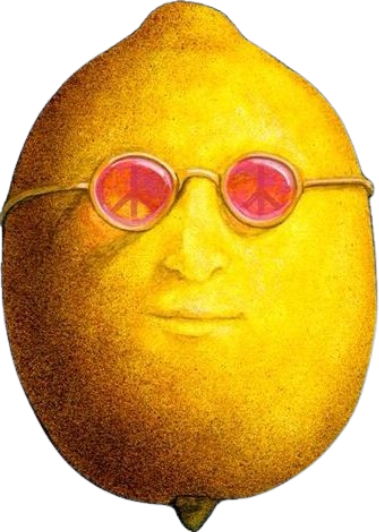

✦ Greetings, Traveler ✦
Welcome to my personal corner of the web. This shrine is a handmade collection of my acrylic canvases, late-night code, acoustic guitar melodies, and scattered thoughts. Warm yourself by the fire, take a look around, and enjoy the quiet atmosphere of the castle.

Latest Scroll: Finished the golden layers on The Kiss replica.

Me 
Student & artist wandering through Ecuador. Accompanied by 3 cats, oil paints, and classical melodies.


🎨 Gallery & Easel



♫ Music Room


Say You Love Me
Fleetwood Mac
Acoustic & Vinyl...

Pinned Note 📌
Don't forget to review biology notes on follicular selection!

Current Obsessions
Knitting
Piano
Fruit Salad
Chemistry
Yellow
Old Manuscripts
Atmosphere
Cozy, studying, and brewing tea.